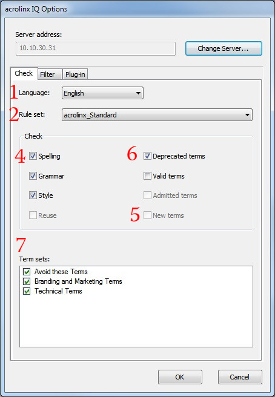

The examples on this page should help you to get started with the Acrolinx Java SDK.
AcrolinxFactoryInstantiator.setLoggerFactory(new LoggerFactory()
{
@Override
public Log getLogger(final Class<?> clazz)
{
return new Log4JLogger(Logger.getLogger(clazz));
}
});
/*
* You also can use the shortcut:
*/
AcrolinxFactoryInstantiator.setLoggerFactoryWithLog4jLogging();
Make sure you make that as early as possible. You can accomplish the same by setting a Java VM property: -Diqfactory.loggerfactory=com.acrolinx.client.factory.Log4jLoggerFactory
// get the acrolinxFactory as bridge to implementation classes
final AcrolinxFactory factory = AcrolinxFactoryInstantiator.get();
// create client information and user
/*
* You get a client signature from your Acrolinx project consultant. The signature must be
* included in your server license.
*/
final ClientInformation clientInformation = factory.clientInformations().create().withClientName(
"MyClient").withVersion("1.3").withBuildNumber(721).withHostName("TheHostname").withClientSignature(
"QmVpc3BpZWxTaWduYXR1cg==").build();
final User user = Users.newUserWithPassword("test22", "test");
factory.applicationStores();
/*
* Create an instance of a ApplicationStore implementation to store the AuthToken returned
* by the server. You can create your own implementation of the ApplicationStore interface
* or use a FileApplicationStore implementation as follows.
*/
final ApplicationStore applicationStore = ApplicationStores.fromFile(new File("store.dat"));
final AcrolinxClient acrolinxClient = factory.createClient(clientInformation, applicationStore);
final ServerEndpoint serverAccess = acrolinxClient.lookupServer(
factory.serverEndpointConfigurations().create("localhost:8031").build());
final ServerConnection serverConnection = serverAccess.connect(user);
The ClientInformation describes your client when it is registered on the server. The values are usually constants. The server uses this information, e.g., when displaying users' checking information in the dashboard.
try {
for (final LanguageCapabilities lc : serverConnection.getCheckAdapter().getCapabilities().getLanguageCapabilities()) {
System.out.println(lc.getLanguage() + " --> " + lc.getRuleSetCapabilities());
}
} catch (final NoCoreServerRunningException e) {
/*
* This exception informs that there is no core server running under the given server
* address. Because this is a RuntimeException catching is optional.
*/
System.out.print(e.getMessage());
return;
}
// or get a specific lc (this is may be null)
final LanguageCapabilities capabilityEn = serverConnection.getCheckAdapter().getCapabilities().getLanguageCapability(
Languages.english());
Logger.getRootLogger().info("Is Custom Admitted Term State support? "
+ serverConnection.getCheckAdapter().getCapabilities().isCustomAdmittedTermStateSupported());
Logger.getRootLogger().info("Name of admitted term state is: " + capabilityEn.getNameOfAdmittedTermState());
// to verify user and password call authenticate privilege without null as privilege
System.out.println(
"Are the credentials for userA are valid? " + serverConnection.getPrivileges().hasPrivilege(null));
// to check if a user has a certain privilege
System.out.println(
"Is userA allowed to run term harvesting? " + serverConnection.getPrivileges().hasRunTermHarvesting());
// create check settings
final Set<RuleSetCapabilities> ruleSetCapabilitiesSet = capabilityEn.getRuleSetCapabilities();
/*
* just take the fist - you should select a specific depending on your business case and
* server installation capabilities
*/
final RuleSetCapabilities selectedRuleSetCapabilities = ruleSetCapabilitiesSet.iterator().next();
final CheckSettings checkSettings = factory.checkSettings().create(Languages.english(),
selectedRuleSetCapabilities.getRuleSet()).withStyleChecking(
selectedRuleSetCapabilities.isStyleCheckingAvailable()).withSEOChecking(
selectedRuleSetCapabilities.isSEOCheckingAvailable()).build();
final DocumentCheckSettings documentCheckSettings = factory.documentCheckSettings().create().withKeyword(
"test").build();
// create a simple string document to check
final Document document = factory.documents().createStringDocument(
"Passive was avoided by the test.").withFileName(Filenames.unknownFilename()).withAuthor(
Authors.unknownAuthor()).withFileFormat(FileFormats.unknownFileFormat()).build();
// run the check
final CheckAdapter checkAdapter = serverConnection.getCheckAdapter();
final CheckInformation checkInformation = factory.checkInformations().create(document).build();
/*
* In case you experience problems with accessing the checking report, set the transfer
* method to WEB_SERVICE. This change causes the SDK to retrieve the report via the web
* service instead of a download via HTTP.
*/
final CheckResult result = checkAdapter.check(checkSettings, checkInformation,
documentCheckSettings).getCheckResult(CheckResultTransferMethod.HTTP);
// create a simple progress monitor
final ProgressMonitor monitor = new ProgressMonitor()
{
@Override
public void tick(final int percent)
{
System.out.println(MessageFormat.format("Check progress: {0} percent", percent));
}
@Override
public boolean isCanceled()
{
return false;
}
};
// run the check
check = checkAdapter.check(checkSettings, checkInformation, documentCheckSettings);
final CheckResult checkResult = check.getCheckResult(monitor, CheckResultTransferMethod.HTTP);
// check() is not blocking, only getCheckResult() blocks until the check is finished
Check check = checkAdapter.check(checkSettings, checkInformation, documentCheckSettings);
// cancel the check
check.cancel();
System.out.println(
"Number of checked words was: " + checkResult.getReport().getCheckingScope().getCheckedWordCount());
System.out.println("The document score was: " + checkResult.getReport().getCheckingScore()
+ " which is status: " + checkResult.getReport().getDocumentStatus());
System.out.println("number of flags: " + checkResult.getReport().getFlags().size());
for (final Flag flag : checkResult.getReport().getFlags()) {
System.out.println("Found flag with description : " + flag.getDescription());
}
// For logging or prototyping purposes use report.toString() to get a textual representation
System.out.println(checkResult.getReport());
// close the session serverConnection.disconnect();
If you forget this call, your session will stay open until it is timing out on the server. This can cause a licensing exception "Your license is already in use" when you connect later on with the same user.
Here is an example how to create an xml csd definition manually:
final String content = "<?xml version=\"1.0\" encoding=\"UTF-8\" ?>"
+ "<holy><grail>The foxx jumped over <ignore>Ignore me!</ignore> the <notignore>hill</notignore>.</grail></holy>";
final SegmentationDefinitionBuilder sdBuilder = acrolinxFactory.documents().createSegmentationDefinitionBuilder(
InclusionMode.INCLUSION);
sdBuilder.addInclusionMode("ignore", InclusionMode.EXCLUSION);
final SegmentationDefinition sd = sdBuilder.build();
final ByteArrayInputStream xmlStream = new ByteArrayInputStream(content.getBytes(Charset.forName("UTF-8")));
final Document doc = acrolinxFactory.documents().createXmlDocumentFromStream(xmlStream, sd).withFileName(
Filenames.unknownFilename()).withAuthor(Authors.unknownAuthor()).build();
assertEquals("The foxx jumped over the hill.", doc.getText());
You can also load the csd from file:
final SegmentationDefinition sd = acrolinxFactory.documents().createSegmentationDefinitionFromFile(file);
final Document doc = acrolinxFactory.documents().createXmlDocumentFromStream(xmlStream, sd).withFileName(
Filenames.unknownFilename()).withAuthor(Authors.unknownAuthor()).build();
assertEquals("The foxx jumped over the hill.", doc.getText());
This shows how to retrieve the languages, rule sets and checking options from a server:
final ServerCapabilities serverCapabilities = serverConnection.getCheckAdapter().getCapabilities();
for (final LanguageCapabilities languageCapabilities : serverCapabilities.getLanguageCapabilities()) {
System.out.println("Language " + languageCapabilities.getLanguage().getLanguageCode());
for (final RuleSetCapabilities ruleSetCapabilities : languageCapabilities.getRuleSetCapabilities()) {
System.out.println(" Ruleset " + ruleSetCapabilities.getRuleSet().getName());
if (!ruleSetCapabilities.getAvailableTermSets().isEmpty()) {
final StringBuilder termSets = new StringBuilder();
for (final TermSet termSet : ruleSetCapabilities.getAvailableTermSets()) {
termSets.append(termSet.getName() + " ");
}
System.out.println(" has term sets " + termSets);
}
final StringBuilder options = new StringBuilder();
if (ruleSetCapabilities.isSpellCheckingAvailable()) {
options.append("spelling ");
}
if (ruleSetCapabilities.isGrammarCheckingAvailable()) {
options.append("grammar ");
}
if (ruleSetCapabilities.isStyleCheckingAvailable()) {
options.append("style ");
}
if (ruleSetCapabilities.isReuseCheckingAvailable()) {
options.append("reuse ");
}
if (ruleSetCapabilities.isTermHarvestingAvailable()) {
options.append("term_harvesting ");
}
if (options.length() > 0) {
System.out.println(" allows " + options);
}
}
}
Short example of how to activate server-side XML extraction and how to retrieve the annotated XML the server returns:
final Document document = factory.documents().createStringDocument("<p>This is a sentence.</p>").withFileName(
Filenames.unknownFilename()).withAuthor(Authors.unknownAuthor()).withFileFormat(
FileFormats.applicationXml()).build();
final CheckSettingsBuilder checkSettingsBuilder = factory.checkSettings().create(language, ruleSet);
final CheckSettings checkSettings = checkSettingsBuilder.build();
CheckResult checkResult;
try {
final CheckInformation checkInformation = factory.checkInformations().create(
document).withServerSideXmlExtraction(true).build();
final Check check = connection.getCheckAdapter().check(checkSettings, checkInformation,
acrolinxFactory.documentCheckSettings().NULL());
checkResult = check.getCheckResult();
if (checkResult.hasAnnotatedXml()) {
System.out.println(checkResult.getAnnotatedXmlUri());
}
} catch (final UserMetaDataIncompleteException e) {
// dear user, please visit e.getUserMetadataEditUrl();
} catch (final AuthorizationFailedException e) {
// reopen the user / password dialog and get a new check adapter
} catch (final InvalidCheckConfigurationException e) {
// please verify your check settings
} catch (final CheckFailedException e) {
// sorry there was an error during the check
}
Here is an example of the check settings GUI in the Acrolinx batch checker:
The following snippets explain how the UI relates to the settings in the API and how to get and set the possible settings:
Language language = null;
for (final LanguageCapabilities lc : serverConnection.getCheckAdapter().getCapabilities().getLanguageCapabilities()) {
System.out.println(lc.getLanguage().getLanguageCode());
language = lc.getLanguage(); // normally let the user select
}
// select one language to get your check settings builder
CheckSettingsBuilder settingBuilder = acrolinxFactory.checkSettings().create(language,
RuleSets.newRuleSet("Demo"));
LanguageCapabilities capability = serverConnection.getCheckAdapter().getCapabilities().getLanguageCapability(
language);
RuleSet ruleSet = null;
for (final RuleSetCapabilities rsc : capability.getRuleSetCapabilities()) {
System.out.println(rsc.getRuleSet().getName());
ruleSet = rsc.getRuleSet(); // normally let the user select
}
// select one language to get your check settings builder
settingBuilder = acrolinxFactory.checkSettings().create(language, ruleSet);
capability = serverConnection.getCheckAdapter().getCapabilities().getLanguageCapability(language);
RuleSetCapabilities ruleSetCapability = capability.getRuleSetCapability(ruleSet);
// adjust your check options GUI
if (ruleSetCapability.isGrammarCheckingAvailable()) {
activateGrammarCheckBox();
}
settingBuilder = acrolinxFactory.checkSettings().create(language, ruleSet);
final boolean valueFromGUI = false;
final boolean newTermsValueFromGUI = false;
settingBuilder.withGrammarChecking(valueFromGUI).withReuseChecking(valueFromGUI).withTermHarvesting(
newTermsValueFromGUI);
capability = serverConnection.getCheckAdapter().getCapabilities().getLanguageCapability(language);
ruleSetCapability = capability.getRuleSetCapability(ruleSet);
// adjust your check options GUI
if (ruleSetCapability.getAvailableTermSets().size() > 0) {
activateTerminologySection();
}
TermSet selectedTermSet = null;
for (final TermSet ts : ruleSetCapability.getAvailableTermSets()) {
System.out.println("add this term set to a list:" + ts.getName());
selectedTermSet = ts; // normally let the user select (one or multiple)
}
settingBuilder = acrolinxFactory.checkSettings().create(language, ruleSet);
// normally let the user select
final Set<TermStatus> termStatuus = Sets.newHashSet(TermStatus.ADMITTED, TermStatus.DEPRECATED);
final Set<TermSet> termSets = Sets.newHashSet(selectedTermSet);
settingBuilder.withTermChecking(termStatuus, termSets);